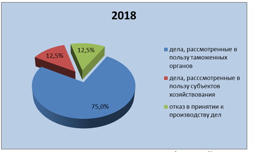

Анализ судебных дел суда Евразийского экономического союза, связанных с классификацией товаров за период с 2016 по 2019 года
Участники ВЭД, которые перемещают товары и транспортные средства через таможенную границу государства и имеют обязанность по уплате таможенных платежей при оформлении
данных товаров, заинтересованы в том, чтобы минимизировать свои затраты при данном процессе.
Все это неизбежно влечет за собой возникновение конфликта интересов, которые приводят к спорам между таможенными органами и участниками внешней торговли, пути
разрешения которых чаще всего происходят в судебном порядке.
Исходя из вышесказанного, наблюдается необходимость проведения анализа судебной практики за период, ограниченный временными рамками - с 2016 по 2019 гг.
В таблице 3 представлена информация по количеству рассмотренных дел Судом Евразийского экономического союза за 2016-2019 года.
Анализ судебной практики за 2016 г на примере Суда Евразийского экономического союза.
В конце 2016 года анализ правовой работы Суда Евразийского экономического союза показал, что в их производстве находилось 23 судебных дел. Судом из этого количества
дел было рассмотрено около 56,5%, что составило 13 дел, связанных с классификацией товаров по единой товарной номенклатуре внешнеэкономической деятельности
Евразийского экономического союза (Рисунок 5).
Рисунок 5. Структура судебных дел в 2016 году
По результатам дел, связанных с классификацией товаров ,76,9 % рассмотрены в пользу таможенных органов, что составило 10 дел. Однако 7,7% составляют дела, которым
отказано в рассмотрении по разным причинам (Рисунок 6).
Рисунок 6. Структура дел, связанных с классификацией товаров 2016 году
Анализ судебной практики за 2017 г на примере Суда Евразийского экономического союза.
В конце 2017 года анализ правовой работы Суда Евразийского экономического союза показал, что в их производстве находилось 17 судебных дел. Судом из этого количества
дел было рассмотрено около 52,9%, что составило 9 дел, связанных с классификацией товаров по единой товарной номенклатуре внешнеэкономической деятельности
Евразийского экономического союза (Рисунок 7).
Рисунок 7. Структура судебных дел в 2017 году
Из количества дел, связанных с классификацией товаров ,66,7% рассмотрены в пользу таможенных органов, что составило 6 дел и одно судебное дело в пользу субъекта
хозяйствования. Однако 22,2% составляют дела, которым отказано в рассмотрении по разным причинам (Рисунок 8).
Рисунок 8. Структура дел, связанных с классификацией товаров 2017 году
Анализ судебной практики за 2018 г на примере Суда Евразийского экономического союза.
В конце 2018 года анализ правовой работы Суда Евразийского экономического союза показал, что в их производстве находилось 21 судебных дел. Судом из этого количества
дел было рассмотрено около 38,%, что составило 8 дел, связанных с классификацией товаров по единой товарной номенклатуре внешнеэкономической деятельности
Евразийского экономического союза (Рисунок 9).
Рисунок 9. Структура судебных дел в 2018 году
Из количества дел, связанных с классификацией товаров ,75 % рассмотрены в пользу таможенных органов, что составило 6 дел. 12,5% составляют дела, которым отказано в
рассмотрении по разным причинам .(Рисунок 10).

Рисунок 10. Структура дел, связанных с классификацией товаров 2018 году
Анализ судебной практики за 2019 г на примере Суда Евразийского экономического союза.
В конце 2019 года анализ правовой работы Суда Евразийского экономического союза показал, что в их производстве находилось 20 судебных дел. Судом из этого количества
дел было рассмотрено около 55 %, что составило 11 дел, связанных с классификацией товаров по единой товарной номенклатуре внешнеэкономической деятельности
Евразийского экономического союза (Рисунок 11).
Рисунок 11. Структура судебных дел в 2019 году
По результатам дел, связанных с классификацией товаров, 72,7 % рассмотрены в пользу таможенных органов, что составило 8 дел. Однако 18,2 % составляют дела, которым
отказано в рассмотрении по разным причинам (Рисунок 12).
Рисунок 12. Структура дел, связанных с классификацией товаров 2019 году
Проведенный анализ за временной период 2016-2019 годов судебной практики по осуществлению правовой деятельности помог выявить, что в некоторых областях наблюдается
снижение или увеличение данных.
Рисунок 13. Динамика изменения общего количества судебных дел с 2016 по 2019 год
Как видно из графика (Рисунок 13) в 2017 году по сравнению с 2016 годом общее количество судебных дел, которые находились в производстве суда Евразийского
экономического союза, снизилось. В 2018 году по сравнению с 2017 годом общее количество судебных дел увеличилось. Однако в 2019 году по сравнению с предыдущим годом
общее количество судебных дел осталось практически на одном уровне.
Рисунок 14. Динамика изменения дел связанных с классификацией товаров с 2016 по 2019 год
Как видно из графика (Рисунок 14) с 2016 года по 2018 года наблюдается уменьшение количества дел, связанных с классификацией товаров, в 2018 году было наименьшее
количество дел. Затем в 2019 году наблюдается стремительное увеличение дел, связанных с классификацией товаров.
Рисунок 15. Динамика изменения дел, рассмотренных в пользу таможенных органов с 2016 по 2019 год
Из графика (Рисунок 15) видно, что решения суда Евразийского экономического союза в основном в пользу таможенных органов. В редком случае решения суда принимаются в
пользу субъектов хозяйствования, также имеет место быть отказ в принятии к производству дел по разным причинам.